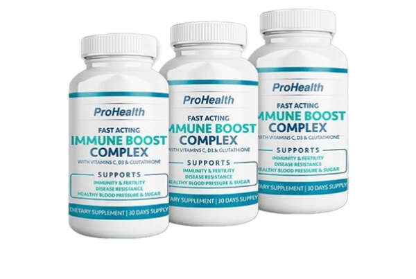

مدونة
محمد
اونلاين الأن



اطلبه الأن
"كوفيد-19: رحلة الرعب والعذاب"
ما يمكن أن يؤدي إليه كوفيد وضعف المناعة
تم النشر , 18:32 | الناشر : محمدالمقدمة:
أهلاً بكم جميعاً
انا اسمى محمد ايمن عمري 35 عاماً و اليوم سوف أحكي لكم قصتي و معاناتي مع فيروس كوفيد 19 (كورونا)
كانت ليلة مظلمة ومرعبة عندما ضربتني عاصفة كوفيد-19. كانت بداية لرحلة طويلة من الرعب والعذاب، حيث شعرت بألم غريب في جسمي وحمى مرتفعة تحجب الرؤية. توجهت إلى المستشفى وهنا بدأت قصتي المرعبة.
المواجهة مع الوباء:
دخلت الى مركز الطوارئ وسط ذعر وهلع يعم المكان. بمجرد أن تم تشخيص إصابتي بفيروس كوفيد-19، غطى الرعب قلبي وعانيت من الخوف المرعب من عدم معرفة ما الذي ينتظرني.
العزل والوحدة:
تم نقلي إلى غرفة العزل حيث أمضيت أياماً معزولاً عن العالم الخارجي. كان الوحدة والصمت المطبق يجعلانني أشعر بالعزلة والضياع. كل ما كان لدي هو الألم والمرارة.
المعاناة الجسدية والنفسية:
شعرت بكل خلية في جسمي تصرخ بالألم، كما لم أكن قادرًا على التنفس بشكل طبيعي. القلق والاضطراب النفسي كانا يجتاحان عقلي، وكأنني في قبضة مرعبة لا مفر منها.
المعركة للبقاء:
لم يكن هناك خيار سوى المقاومة والصمود. بينما كانت الأيام تمر ببطء، تراجعت قوتي ومقاومتي. كل يوم كان تحدياً جديداً، وكل لحظة كانت معركة للبقاء.
تأثير الألم على العائلة:
شعرت بالعجز عن حماية عائلتي من هذا الوباء المرعب. كانوا يعانون من القلق والخوف على سلامتي وحياتي. كانت رؤيتهم يعانون ويبكون من العجز شيئاً لا يُحتمل.
البقاء والتعافي:
رغم كل الصعوبات والتحديات، نجحت في البقاء والتغلب على الفيروس المميت. بفضل الرعاية الطبية والدعم العائلي، بدأت ببطء في التعافي والعودة إلى الحياة الطبيعية.
المكافحة والتغلب على التحديات:
بالرغم من التحديات الصعبة التي واجهتها، استمريت في البحث عن طرق لتعزيز جهاز المناعة وتحسين صحتي العامة. اتبعت نظامًا غذائيًا صحيًا وزادت من ممارسة التمارين الرياضية. كما اتخذت إجراءات احترازية إضافية للوقاية من أي إصابات مستقبلية.
أخبرني المختصين ان بعد سن 35 هي أخطر فترة يمكن المعاناة فيها من أعراض فيروس كورونا و نقص المناعة عموماً :
بعدما تتجاوز سن الـ35، يبدأ الرعب الحقيقي. جهاز المناعة، الذي كان يبدو قويًا وصلبًا في السنوات السابقة، يبدأ بالتلاشي ببطء. يظهر الخوف المرعب من الإصابة بمشاكل صحية خطيرة بشكل متزايد، ولا يبدو أن هناك مفر من هذا القدر المرعب. فيروس كوفيد-19 ينتظر في الأفق كالوحش الذي يتربص بفريسته، مستعدًا ليضرب حينما يجد الفرصة المناسبة.
كل يوم يمر يزيد من الرعب والخوف، حيث تشعر بأن القوة والصلابة التي كنت تشعر بها في السابق تتلاشى بسرعة أمام عدو مخيف وغامض. الأعراض تزداد سوءًا، وتشعر بأن جسدك لم يعد يستجيب للمعافاة بنفس القوة كما كان في السابق.
الخوف يتغلغل في كل خلية في جسدك، والليالي تصبح مظلمة ومليئة بالكوابيس، حيث تحاول في كل مرة مواجهة الجحيم الذي يعيشه جسدك. الوحدة والعزلة تسيطران على حياتك، وتشعر بأنك محاصر في عالم من الظلام دون أمل في النجاة.
العائلة تعاني معك، وتشاهد كل لحظة من عذابك بقلب مكسور وعينين مليئتين بالدموع. يحاولون بكل قوتهم دعمك ومساعدتك، ولكن يظلون عاجزين أمام هذا الوباء المرعب الذي يهدد حياتك.
وسط كل هذا الرعب والعذاب، تجد نفسك تحارب بكل ما تملك، تبذل جهدًا كبيرًا للبقاء على قيد الحياة، ولكنك تعلم في النهاية أن الأمل الوحيد هو المقاومة والصمود، والصلاة خصوصاً اننا في شهر رمضان الكريم الأن للنجاة من هذا الجحيم المرعب.
ما هي الطرق التي استخدمتها للتغلب على كل هذه المشاكل و مشكلة ضعف المناعة ؟
هنا سوف أضع لكم صورة رجل رأيت في المستشفى و عانى من فيروس كورونا و لكن للأسف لم يتلقى المكملات و الفيتامينات اللازمة للحماية و الوقاية و زيادة المناعة و سوف أحكي لكم قصته لانه كان يرقد معي بنفس غرفة العزل قبل وفاته
هذا كان الشكل عندما دخلوا به إلى المستشفى لغرفة الطوارئ
عانى هذا الرجل من مشكلة كبيرة عند إصابته بفيروس كورونا نظراً اولاً لكبر سنه و هو عمره كان 45 عاماً و أيضاً لان مناعته لم يهتم بها مطلقاً و كان دائماً عرضة للعديد من المشاكل الصحية بسبب هذه المشكلة
عندما تحدثت معه عرفت انه لم يستخدم أبداً اي مكملات غذائية او حتى فيتامينات لزيادة المناعة و لذلك عندما اصيب بفيروس كورونا تمكن منه الفيروس بكل ما للكلمة من معنى و للأسف انتهت معاناته بعد يومين في المستشفى بالموت
بعد تجربة العذاب والرعب مع فيروس كوفيد-19 وتأثيره على جهاز المناعة، اضطررت إلى اتباع مجموعة من الطرق للتغلب على المشاكل ومحاولة تقوية جهاز المناعة. إليك بعض الخطوات التي اتخذتها:
- تغذية صحية: بدأت في تناول الغذاء الصحي الذي يحتوي على العناصر الغذائية الضرورية لتقوية جهاز المناعة. زادت نسبة الفواكه والخضروات في نظامي الغذائي، وزادت كمية البروتين والدهون الصحية.
- التمارين الرياضية: بدأت في ممارسة التمارين الرياضية بانتظام لتعزيز اللياقة البدنية وتقوية جهاز المناعة. كانت المشي والركض وتمارين اليوغا بمثابة مفتاح للشعور بالنشاط والحيوية.
- النوم الجيد: أولى اهتماماً كبيراً بجودة النوم، حيث أكدت على الحصول على النوم الكافي والمريح لدعم جهاز المناعة واستعادة الطاقة.
- التقليل من التوتر والقلق: بدأت في ممارسة تقنيات الاسترخاء مثل التأمل والتنفس العميق للتخفيف من التوتر والقلق، مما ساهم في تعزيز صحتي العقلية وبالتالي تقوية جهاز المناعة.
- تجنب التدخين والكحول: قررت تجنب التدخين وتقليل استهلاك الكحول إلى الحد الأدنى، حيث يعتبر الإدمان على هذه العادات الضارة عاملاً يضعف الجهاز المناعي.
- التواصل الاجتماعي: كنت ألتزم بزيارات منتظمة للمختصين لفحص حالتي الصحية وتقييم تأثير التعافي والتغييرات النمطية على جهاز المناعة.
- إستخدام المكملات الغذائية و الفيتامينات التي تساعد على زيادة المناعة
و سوف أضع لكم أفضل مكمل غذائي إستخدمته للتعافي و التخلص من مشكلة المناعة و هذا ليس إعلان و لكن أنا اود ان افيدكم و أتمنى أن لا يعاني احد نفس معاناتي التي عانيتها .
المكمل الغذائي الأفضل في الجزائر للتخلص من مشكلة المناعة المنخفضة و زيادة المناعة

هذا المكمل الغذائي إسمه ProHealth و هو مكمل غذائي طبيعي 100% و ليس له أي أعراض جانبية للإستخدام لم اعاني منذ ان استخدمته من مشاكل المناعة و تخلصت من جميع الأثار الجانبية بعد الإصابة بفيروس كورونا .
تجربتي مع المكمل الغذائي ProHealth
كانت تجربتي مع استخدام هذا المكمل الغذائي لتقوية جهاز المناعة حقًا تجربة لا تُنسى. وجدت نفسي في موقف صعب حيث كانت صحتي تتدهور بسبب نقص في جهاز المناعة، مما جعلني عرضة للإصابة بالعديد من المشاكل الصحية والتحديات الصحية.
بدأت باستخدام المكمل الغذائي بنصيحة من العديد من المختصين و الأصدقاء وتحديدًا اللذين عانوا من نفس المشكلة و كانوا بنفس عمري ولم أكن أتوقع الفوائد التي حصلت عليها من إستخدام هذا المكم الغذائي الرائع . بعد بضعة أسابيع من الاستخدام المنتظم، لاحظت تحسنًا ملحوظًا في صحتي وشعرت بأن جسدي يستعيد قوته وحيويته.
كان من أبرز الفوائد التي لاحظتها هي زيادة في مستوى الطاقة وتحسن في الحالة العامة لصحتي. لم أعد أشعر بالإرهاق المستمر الذي كنت أعاني منه، وتقلصت مدة وشدة الأمراض التي كنت أصاب بها بشكل ملحوظ.
بفضل ProHealth، استطعت تعزيز جهاز المناعة الخاص بي وتقويته بشكل كبير، مما ساعدني في مواجهة التحديات الصحية بثقة وإصرار. أصبحت أقل عرضة للإصابة بالمشاكل الصحية المزمنة وأستطيع الاستمتاع بحياة صحية ونشطة بشكل أفضل.
الختام:
كانت هذه الرحلة مرعبة ومؤلمة للغاية، ولكنها علمتني الكثير عن قوة الإرادة والصمود في وجه الصعاب. نجحت في تجاوز هذه التجربة المروعة، والآن أقف هنا كشاهد على قوة الروح الإنسانية في مواجهة الظروف القاسية.
كيف تمكنت من طلب ProHealth في الجزائر ؟
خطوات الشراء كانت سهلة جداً نظراً انه يمكنكم طلب المنتج و سيصل لكم حتى باب المنزل و يمكنكم الدفع عند الإستلام
خطوات الشراء :
- عليكم ملئ نموذج الطلب الرسمي و سوف أضعه لكم بالأسفل
- بعد ملئ نموذج الطلب اضغط على زر إتمام الطلب و بعد ذلك سوف يتم التواصل معكم من قبل الشركة المصنعة للمنتج للرد على جميع أسئلتك
- توصيل المنتج حتى باب منزلك و الدفع عند الإستلام

املأ نموذج الطلب للحصول على « prohealth»
بتخفيض 65%
كل ما عليكم هو كتابة رقم هاتفكم و إسمكم !
أسرعوا للحاق بالتخفيض !الوقت المتبقى لإنتهاء التخفيض في الجزائر :
09 : 42
أسرعوا للحاق بالتخفيض !الوقت المتبقى لإنتهاء التخفيض في الجزائر :
09 : 42
السعر قبل التخفيض : 17000 DZD
السعر بعد التخفيض : 5999 DZD
*عند شرائك دورة ProHealth
تعليقات :
فاطمة |
"لقد كانت تجربتي مع ProHealth مدهشة! بعد أن أصبت بفيروس كورونا وعانيت من مشاكل في جهاز المناعة، بدأت باستخدام هذا المكمل الغذائي. لقد شعرت بتحسن كبير في صحتي العامة وتقوية جهاز المناعة، وأصبحت أقل عرضة للإصابة بالأمراض. أنا ممتن لهذا المنتج الرائع!"
سارة|
"بعد معاناتي مع كورونا ومشاكل في جهاز المناعة، قررت تجربة ProHealth ولم أكن أتوقع النتائج الرائعة التي حصلت عليها! شعرت بتحسن واضح في صحتي بعد بضعة أسابيع فقط من الاستخدام، وأصبحت أقوى وأكثر نشاطًا. أنصح الجميع بتجربة هذا المنتج الرائع."
محمود |
" ProHealth حقًا غير حياتي! بعد أن تعرضت لفيروس كورونا وتأثرت بمشاكل في جهاز المناعة، كان هذا المكمل الغذائي هو الحل الذي بحثت عنه. لاحظت تحسنًا كبيرًا في صحتي وشعرت بالقوة والحيوية التي لم أشعر بها من قبل. شكرًا لهذا المنتج الرائع على تحسين جودة حياتي!"
خالدة |
كان ProHealth إنقاذًا حقيقيًا بالنسبة لي! بعد صراعي مع فيروس كورونا ومشاكل في جهاز المناعة، قررت تجربة هذا المكمل الغذائي ولم أكن أتوقع النتائج الرائعة التي حصلت عليها. لقد شعرت بتحسن كبير في صحتي العامة وأصبحت أقل عرضة للإصابة بالأمراض. أنا ممتن لهذا المنتج!"
منال |
" ProHealth كان المنقذ الحقيقي بالنسبة لي! بعد أن تعرضت لفيروس كورونا وواجهت مشاكل في جهاز المناعة، قررت تجربة هذا المكمل الغذائي ولم أكن أتوقع النتائج الرائعة التي حصلت عليها. شعرت بتحسن ملحوظ في صحتي وشعرت بالنشاط والحيوية التي لم أشعر بها من قبل. أوصي بشدة بهذا المنتج!"

سناء |
"بعد أن تأثرت بفيروس كورونا وواجهت مشاكل في نظام المناعة، قررت تجربة ProHealth ولم أكن أتوقع النتائج الرائعة التي حصلت عليها! بعد استخدامه لبضعة أسابيع فقط، شعرت بتحسن ملحوظ في صحتي وشعرت بأنني أصبحت أكثر نشاطًا وحيوية. أنا ممتن لهذا المنتج الرائع وأنصح الجميع بتجربته."
جميلة |
" ProHealth كان المكمل الغذائي الذي بحثت عنه! بعد معاناتي مع فيروس كورونا ومشاكل في نظام المناعة، كان هذا المنتج الخارق هو ما ساعدني على استعادة قوتي وصحتي. لقد لاحظت تحسنًا كبيرًا في مستوى طاقتي ومقاومتي للأمراض بعد استخدامه. أنا ممتنة جدًا لهذا المنتج وأوصي به للجميع!"
عبد الله |
" ProHealth غيّر حياتي تمامًا! بعد صراعي مع فيروس كورونا ومشاكل في جهاز المناعة، كان هذا المكمل الغذائي هو ما أنقذني من الأمراض المزمنة. لقد شعرت بتحسن كبير في صحتي العامة وأصبحت أقل عرضة للإصابة بالأمراض بشكل عام. أنا ممتن لهذا المنتج الرائع ولن أتوقف عن استخدامه!"
صفية |
"بعد معاناتي مع فيروس كورونا ومشاكل في نظام المناعة، كنت في حاجة ماسة إلى دعم إضافي لجهاز المناعة. ProHealth كان المكمل الغذائي الذي ساعدني على تحسين صحتي بشكل ملحوظ. لقد لاحظت تحسنًا في مستوى الطاقة وتقوية جهاز المناعة بشكل عام. أوصي به بشدة لمن يعانون من مشاكل مماثلة!"